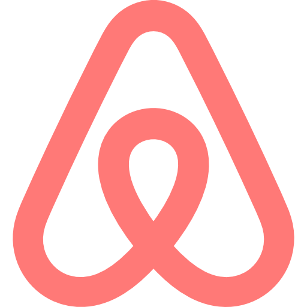

Desde que surgiu, o Docker vem ganhando cada vez mais expressividade. Hoje, ele é usado em praticamente todas as aplicações. Vamos ver algumas empresas mais conhecidas que o utilizam

Airbnb:
A Airbnb usa os containers Docker para separar as tarefas empenhadas pelo sistema, garantindo que todas rodem em sistemas igualmente e assim ajam perante os mesmos parâmetros. Eles criaram "Jorbs", um sistema que roda cada tarefa "job" separadamente. O desenvolvedor configura os comandos e dependências que serão utilizados e o jorb cria um container Docker para executar.

Google:
A Google usava containers muito antes do Docker existir, com um sistema próprio chamado Borg. O Borg usava um conceito semelhante a containers para isolar recursos da máquina para cada aplicação e garantir que os serviços pudessem ser executados no mesmo servidor sem interferir um no outro. Com a chegada do Docker, a empresa apoiou a sua utilização pela facilidade de uso da ferramente, podendo expandir mais ainda a tecnologia pelo mundo da computação.
Netflix:
A Netflix usa containers por conta da alta demanda do serviço. Com diversos microsserviços e milhões de usuários, cada serviço deve rodar de maneira rápida, escalável e isolada, assim, atualizações são feitas rapidamente, fica simples de adaptar cada serviço ao necessário e erros não afetam toda a aplicação, um container "bugado" não vai derrubar os outros. Para rodar os containers, a Netflix usa o Titus, sua própria plataforma de containers que roda na nuvem da AWS onde ela está hospedada.
Spotify:
O Spotify também usa containers pela alta demanda do serviço, com diversos mcirosserviços e milhões de usuário. Assim, cada serviço roda de maneira isolada e mais eficaz, proporcionando mais eficiência ao funcionamento do aplicativo. Porém, o número de containers ficou tão grande que o Spotify teve que implementar uma ferrmanta própria, o "Tsunami", que fazia atualizações graduais nos containers para evitar que o sistema ficasse sobrecarregado.